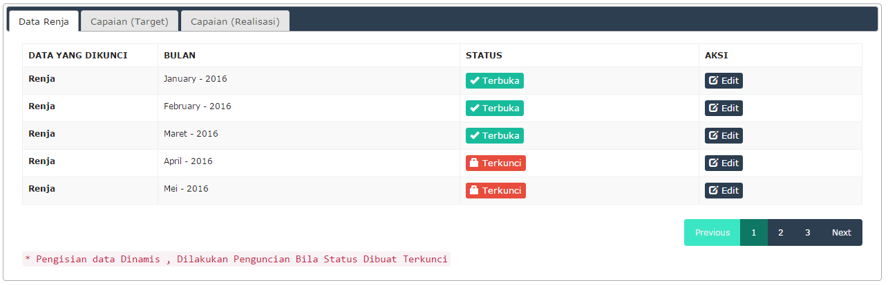
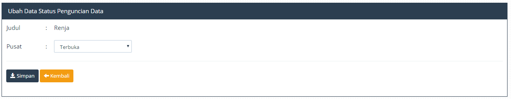
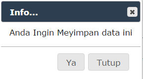
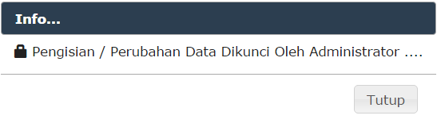

Penguncian isian merupakan salah satu fitur yang tersedia dalam aplikasi , gunanya untuk mencegah user dalam melakukan perubahan data Renja yang sudah disetujui maupun belum disetujui , data ini dibuat dalam bentuk bulanan , fitur ini disediakan guna melakukan penguncian dalam melakukan pengisian data berupa.
Berikut adalah tahapan proses perubahan data pada menu penguncian ini .
1. Masuk Ke Menu "Tools"
2. Masuk Ke Menu "Penguncian Isian"
3. Pilih Tab Yang Ingin Dipilih, Kemudian Lakukan Perubahan Data Oleh User.
4. Klik Tombol "Edit"

Gambar Menu Penguncian Isian
5. Tombol Simpan Ketika Data yang Diinginkan Sudah .

Gambar Form Update
6. Klik Tombol ya Pada Konfirmasi .

Gambar Form Notifikasi
7. Bila Sudah Selesai Maka Proses Yang Akan Terjadi Pada Data Renja Maupun capaian , Akan Terkunci.

Gambar Bila Proses Penguncian Sudah Berhasil
Created with the Personal Edition of HelpNDoc: Easily create Qt Help files